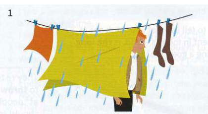
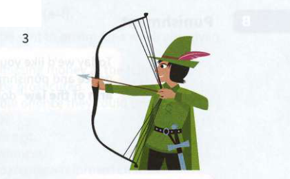
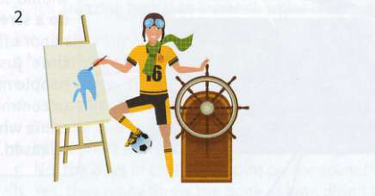
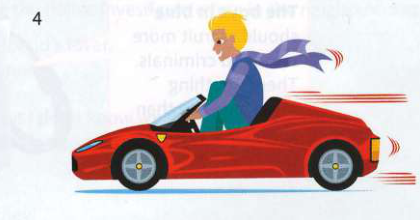

Bài tập
27.1Hoàn thành mỗi thành ngữ từ phần A ở trang đối diện. A
- Let's hire Dan. He has a lot of get ......................................................... and go, and will really inspire the team. (Hãy thuê Dan. Cậu ấy có rất nhiều sự năng nổ và chủ động, và sẽ thực sự truyền cảm hứng cho đội ngũ [viết lại bằng: up (get-up and go: sự năng nổ và chủ động)].)
- He's a person with many skills and talents, a true man of many ......................................................... . (Anh ấy là một người có nhiều kỹ năng và tài năng, một người đàn ông đa tài thực sự [viết lại bằng: parts (man of many parts: người đa tài)].)
- The restaurant is popular with banking whizz ......................................................... , all talking loudly about the financial deals they're doing. (Nhà hàng này được những thần đồng ngân hàng ưa chuộng, tất cả họ đều nói chuyện lớn tiếng về các thương vụ tài chính mà họ đang thực hiện [viết lại bằng: kids (whizz kid: thần đồng / người trẻ tuổi tài ba)].)
- Schools often encourage their students to collect as many ...................................................... to their bow as possible. (Các trường học thường khuyến khích học sinh của mình tích lũy càng nhiều tài lẻ/kỹ năng phụ trợ càng tốt [viết lại bằng: strings (strings to one's bow: nhiều tài lẻ / kỹ năng phụ trợ)].)
- Ask Auntie Lily to help with your geography project - she's a ........................ ............................... of information about different places. (Hãy nhờ Dì Lily giúp đỡ dự án địa lý của cháu - dì ấy là một kho thông tin về các địa điểm khác nhau [viết lại bằng: mine (mine of information: kho thông tin)].)
27.2Sửa lỗi sai trong những thành ngữ này.
- Concentrate on your homework and stop playing a fool! (Hãy tập trung vào bài tập về nhà và thôi làm trò hề đi! [playing a fool - sai, đúng ra phải là playing the fool].)
- I hope Joe doesn't come to the party - he's such a cold blanket. (Tôi hy vọng Joe không đến bữa tiệc – anh ta đúng là kẻ làm mất hứng [a cold blanket - sai, đúng ra phải là a wet blanket].)
- I suppose that everyone ultimately has to look out for figure one. (Tôi cho rằng cuối cùng thì ai cũng phải lo cho bản thân mình trước [figure one - sai, đúng ra phải là number one].)
- Kate volunteers for all the jobs that no one else will do - she's a real glutton for work. (Kate tình nguyện làm tất cả những công việc mà không ai khác chịu làm – cô ấy đúng là người thích tự ôm việc vào người [glutton for work - sai, đúng ra phải là glutton for punishment].)
- I always said she was a loose gun, so I'm not surprised she's causing trouble. (Tôi luôn nói cô ta là người có hành vi khó lường, nên tôi không ngạc nhiên khi cô ta gây rắc rối [a loose gun - sai, đúng ra phải là a loose cannon].)
- The newspapers are claiming that the prince is a love snake. (Các tờ báo đang khẳng định rằng vị hoàng tử là kẻ bội bạc [a love snake - sai, đúng ra phải là a love rat].)
- Be extra kind and calm with Jarek - he's very tightly strung. (Hãy đặc biệt tử tế và điềm đạm với Jarek – anh ấy rất dễ bị căng thẳng và kích động [tightly strung - sai, đúng ra phải là highly strung].)
- Everyone admires the young entrepreneur for his get-up and buy. (Mọi người đều ngưỡng mộ nhà doanh nghiệp trẻ vì sự năng nổ và chủ động của anh ấy [get-up and buy - sai, đúng ra phải là get-up and go].)
27.3Những bức tranh này gợi cho bạn nghĩ đến những thành ngữ nào?




27.4Thay thế phần gạch chân trong mỗi câu bằng một thành ngữ.
- I'm really scared about meeting them. I'm sure they'll be angry and criticise me. (Tôi thực sự rất lo sợ khi gặp họ. Tôi chắc chắn họ sẽ giận dữ chỉ trích tôi [viết lại bằng: eat me for breakfast (eat sb for breakfast: dễ dàng áp đảo/đánh bại ai)].)
- I don't want to be miserable and spoil your fun, but please can you turn the music down? It's too loud. (Tôi không muốn làm kẻ phá đám/mất hứng, nhưng làm ơn vặn nhỏ nhạc xuống được không? Nó quá to. [viết lại bằng: be a wet blanket (a wet blanket: kẻ làm mất hứng / phá đám)].)
- Some people say that to succeed in business, you need to put your own interests first. (Một số người nói rằng để thành công trong kinh doanh, bạn cần phải đặt lợi ích của bản thân lên hàng đầu [viết lại bằng: look out for number one (chỉ lo cho bản thân / ích kỷ)].)
- There always seems to be a child in every class who acts in a silly way to make the other pupils laugh. (Dường như lớp nào cũng luôn có một đứa trẻ làm trò hề để khiến các học sinh khác cười [viết lại bằng: plays the fool (play/act the fool: làm trò hề / làm trò ngốc)].)
- Martina would be easier to live with if she weren't so nervous and easily upset. (Sống với Martina sẽ dễ dàng hơn nếu cô ấy không quá dễ bị căng thẳng và kích động [viết lại bằng: highly strung (dễ bị căng thẳng và kích động)].)
- Some see him as an unpredictable and untrustworthy person, but this is unfair. (Một số người coi anh ta là kẻ có hành vi khó lường/không đáng tin, nhưng điều này thật bất công [viết lại bằng: a loose cannon (a loose cannon: người có hành vi khó lường / quả bom nổ chậm)].)